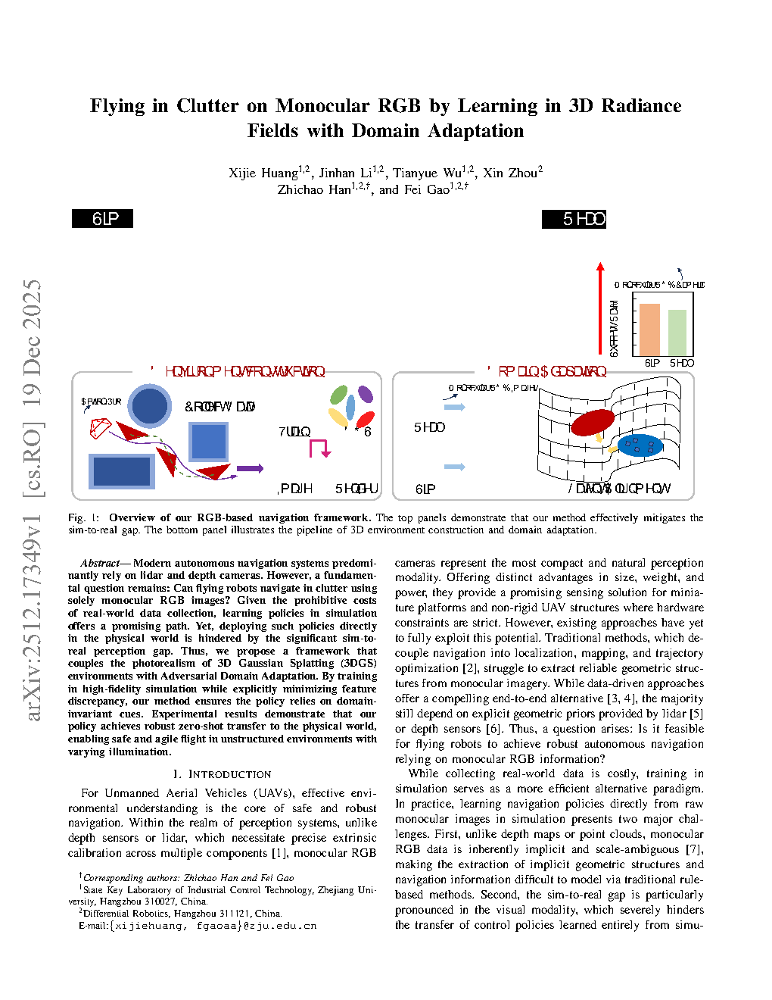
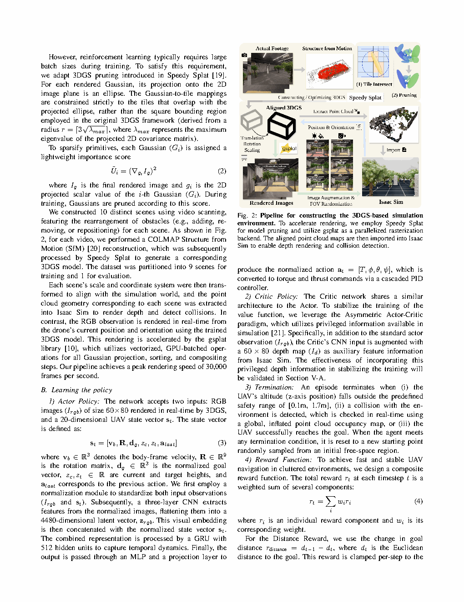
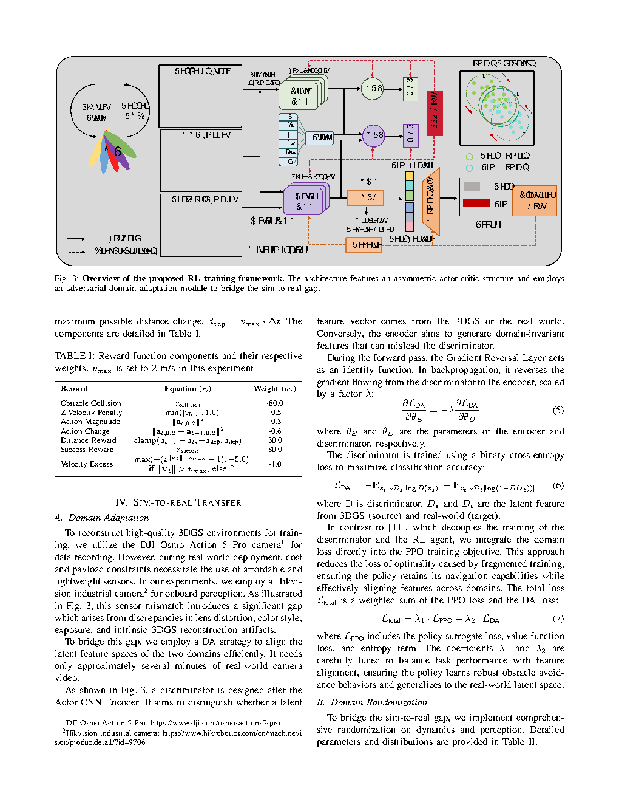

| Title | Flying in Clutter on Monocular RGB by Learning in 3D Radiance Fields with Domain Adaptation（在杂乱环境中基于单目RGB的飞行：通过3D辐射场学习与域自适应） |
| Authors | Xijie Huang, Jinhan Li, Tianyue Wu, Xin Zhou, Zhichao Han, Fei Gao（corresponding） |
| Affiliation | 浙江大学（Zhejiang University），Differential Robotics |
| Venue | arXiv:2512.17349，2025年12月 |
| DOI / Links | arXiv:2512.17349 |
| TL;DR | 提出端到端强化学习导航框架——仅使用单目RGB相机输入，通过在3D高斯泼溅（3DGS）构建的光照真实仿真环境中训练（经剪枝与并行化加速至30K fps），结合对抗域自适应（adversarial domain adaptation）弥合sim-to-real差距，实现零样本迁移到真实杂乱环境中的敏捷飞行，无需深度传感器或显式建图。 |
| Inspiration Source | → What Insight It Inspired | Type |
|---|---|---|
| 3D Gaussian Splatting（Kerbl et al. 2023）——实时照片级渲染 | → 从真实环境扫描生成3DGS场景，作为RL训练环境。3DGS的渲染质量远超传统光栅化仿真（如Isaac Sim），能够捕捉真实世界的光照变化、纹理细节、阴影——这些是视觉导航策略泛化的关键 | 架构 |
| Domain Randomization + Adversarial Domain Adaptation | → 传统domain randomization（随机化纹理、光照）虽然有效，但在视觉导航中仍不足以弥合仿真到真实的巨大差距。引入对抗域自适应：在策略网络的中间特征层添加域判别器（domain discriminator），通过梯度反转层（GRL）迫使特征提取器生成域不变（domain-invariant）的视觉表征 | 方法 |
| Asymmetric Actor-Critic（Pinto et al. 2017） | → Critic可以访问真实状态（ground-truth position、velocity等），而Actor仅依赖视觉观测。这种非对称设计在训练时利用特权信息加速Critic学习，但在部署时Actor完全不需要这些信息——既加快了训练，又保证了部署可行性 | 策略 |
| 3DGS剪枝 + GPU并行化加速 | → 原始3DGS的渲染速度（~100 fps）远不足以支持RL训练需要的大量样本（通常需要亿级时间步）。通过高斯点剪枝（移除对视觉质量影响小的高斯点）和GPU并行化（多个环境实例并行渲染），将仿真速度提升到30K fps，使得大规模RL训练成为可能 | 工程 |
flowchart TB
subgraph TRAIN["离线训练阶段（仿真 + 少量真实数据）"]
direction LR
SCENE["3DGS场景 · 真实环境扫描重建"]
PRUNE["高斯点剪枝 · 保留~70% · 渲染加速"]
SIM["并行仿真 · GPU加速 · 30K fps"]
RL["RL训练 · Asymmetric Actor-Critic · PPO"]
DA["对抗域自适应 · Domain Discriminator + GRL"]
end
subgraph DEPLOY["在线部署阶段（仅单目RGB）"]
direction LR
CAM["单目RGB相机 · 30Hz · 640×480"]
CNN["CNN特征提取 · 域不变表征"]
GRU["GRU时序融合 · 512维隐藏状态"]
ACTOR["Actor MLP · 输出vx,vy,vz,yaw_rate"]
CTRL["底层飞控 · 角速度+推力控制"]
end
SCENE --> PRUNE --> SIM --> RL
REAL_DATA["少量真实飞行数据 · 仅RGB无标签"] --> DA
DA --> CNN
RL --> ACTOR
CAM --> CNN --> GRU --> ACTOR --> CTRL
REAL_DATA -.->|"域判别器训练"| CNN
SIM -.->|"域判别器训练"| CNN
classDef train fill:#e8f0fe,stroke:#3b82f6,stroke-width:2px,color:#1d4ed8
classDef deploy fill:#e6f7ee,stroke:#10b981,stroke-width:2px,color:#047857
classDef data fill:#fef7ed,stroke:#f59e0b,stroke-width:2px,color:#92400e
class SCENE,PRUNE,SIM,RL,DA train
class CAM,CNN,GRU,ACTOR,CTRL deploy
class REAL_DATA data
flowchart TB
subgraph SOURCE["数据源"]
direction LR
REAL_IMG["真实场景多视角图像"] --> SCAN["3DGS重建 · COLMAP+3DGS"]
FLIGHT["少量真实飞行RGB帧"] --> DOMAIN_LABEL["域标签: 仿真=0 / 真实=1"]
end
subgraph RENDER["训练时渲染"]
direction LR
POSE["随机采样相机位姿"] --> RENDER_GS["3DGS渲染 · 640×480 RGB"]
RENDER_GS --> IMG_AUG["数据增强: 噪声、模糊、色偏"]
end
subgraph ENCODE["特征编码"]
direction LR
CNN_ENC["CNN: ResNet-18骨干"] --> FEAT["512维视觉特征"]
FEAT --> GRU_ENC["GRU: 融合时序 · hidden=512"]
end
subgraph HEAD["并行预测头"]
direction LR
GRU_OUT["GRU输出 + hidden state"] --> POLICY["Policy Head: 动作分布N(μ,σ)"]
GRU_OUT --> VALUE["Value Head: 状态价值V(s)"]
FEAT --> DOMAIN_HEAD["Domain Head: 域分类0/1"]
end
subgraph LOSS["损失函数"]
direction LR
POLICY --> PPO_LOSS["PPO: Clipped Surrogate Loss + Entropy"]
VALUE --> VALUE_LOSS["Value Loss: MSE"]
DOMAIN_HEAD --> DA_LOSS["DA Loss: Binary Cross-Entropy · GRL反转"]
end
SOURCE --> RENDER --> ENCODE --> HEAD --> LOSS
DA_LOSS -.->|"GRL梯度反转"| FEAT
DA_LOSS -.->|"迫使特征域不变"| CNN_ENC
classDef source fill:#fef7ed,stroke:#f59e0b,stroke-width:2px,color:#92400e
classDef render fill:#e8f0fe,stroke:#3b82f6,stroke-width:2px,color:#1d4ed8
classDef encode fill:#f0ebfd,stroke:#8b5cf6,stroke-width:2px,color:#6d28d9
classDef head fill:#e6f7ee,stroke:#10b981,stroke-width:2px,color:#047857
classDef loss fill:#ffe4e6,stroke:#f43f5e,stroke-width:2px,color:#be123c
class REAL_IMG,SCAN,FLIGHT,DOMAIN_LABEL source
class POSE,RENDER_GS,IMG_AUG render
class CNN_ENC,FEAT,GRU_ENC encode
class GRU_OUT,POLICY,VALUE,DOMAIN_HEAD head
class PPO_LOSS,VALUE_LOSS,DA_LOSS loss
flowchart TD
subgraph PHASE1["阶段1: 环境数字化"]
direction LR
P1["采集真实场景多视角图像 · 手机/相机 + COLMAP"] --> P2["3DGS重建 · 高斯点优化 · PSNR>30dB"]
P2 --> P3["高斯点剪枝 · 移除贡献<1%的点 · 保留~70%"]
P3 --> P4["GPU并行化 · 多环境实例 · 30K fps"]
end
subgraph PHASE2["阶段2: RL训练 + 域自适应"]
direction LR
P5["PPO训练 · 4百万环境步 · Asymmetric AC"] --> P6["Reward: 前进+避障+平滑+存活"]
P6 --> P7["插入Domain Discriminator · 少量真实数据"]
P7 --> P8["联合优化: PPO Loss + λ·DA Loss"]
end
subgraph PHASE3["阶段3: 零样本部署"]
direction LR
P9["策略导出 · 仅保留Actor+CNN+GRU"] --> P10["部署到真实无人机 · 单目RGB 30Hz"]
P10 --> P11["真实杂乱环境飞行 · 零样本·无需微调"]
end
PHASE1 -->|"3DGS场景"| PHASE2
PHASE2 -->|"训练好的策略"| PHASE3
P11 -.->|"反馈: 收集更多真实数据"| P7
P8 -.->|"反馈: 调整λ平衡"| P7
classDef phase1 fill:#fef7ed,stroke:#f59e0b,stroke-width:2px,color:#92400e
classDef phase2 fill:#e8f0fe,stroke:#3b82f6,stroke-width:2px,color:#1d4ed8
classDef phase3 fill:#e6f7ee,stroke:#10b981,stroke-width:2px,color:#047857
class P1,P2,P3,P4 phase1
class P5,P6,P7,P8 phase2
class P9,P10,P11 phase3
| 类别 | 内容 | 维度 |
|---|---|---|
| 输入 | 单目RGB图像（640×480），30Hz帧率 | 640×480×3 |
| 输出 | 4自由度速度指令：$(v_x, v_y, v_z, \dot{\psi})$ | 4维连续动作 |
| 目标 | 从任意起始位置穿过杂乱环境到达目标区域，不碰撞障碍物 | 成功率、碰撞率、飞行时间 |
这是一个视觉导航（Visual Navigation）问题——属于强化学习驱动的端到端感知-决策问题。问题被建模为部分可观测马尔可夫决策过程（POMDP）：单帧RGB图像无法完整描述环境状态（缺乏深度和速度信息），必须通过GRU的时序记忆来隐式推断。任务处于RGB-only视觉导航的前沿：不依赖深度传感器、不构建显式地图、仅用单目RGB在现实世界的杂乱环境中自主飞行。平台：四旋翼无人机，场景：室内杂乱环境（有桌椅、书架、管道等障碍物）。
⚠ 表头用英文，正文用中文
| Prior Method | Core Idea | Why It Fails |
|---|---|---|
| Mapping-Planing-Control Pipeline（传统建图-规划-控制） | 用深度传感器建图 → 路径规划（A*、RRT*） → 轨迹优化 → 跟踪控制 | 需要深度传感器（如LiDAR、结构光）——增加重量、功耗和成本。显式建图对光照、纹理、动态场景敏感，在缺乏纹理的区域（白墙）深度估计失败。整个管线的累积延迟（建图+规划+控制）限制了敏捷性。 |
| Learning in Simulation + Domain Randomization | 在Isaac Sim等仿真器中用domain randomization（随机化纹理、光照、物理参数）训练RL策略，直接部署到真实世界 | CAD模型和简单光照与真实世界的视觉差距太大——随机化虽然能一定程度泛化，但无法覆盖真实世界中所有可能的视觉变化。在杂乱室内环境中成功率通常很低（< 50%），尤其是遇到训练中未见过的新障碍物类型时。 |
| Learning from Real-World Data（在真实世界训练） | 直接在真实无人机上收集数据训练RL策略（如直接在真实环境中飞数百万步） | 采样效率极低，需要长时间的飞行数据收集（数天到数周）。安全问题：RL探索过程中的碰撞可能导致硬件损坏。环境多样性受限于物理可达的场景——无法在训练中覆盖"所有可能的环境"。 |
| Depth Prediction + Navigation（单目深度估计后规划） | 先用单目深度估计网络（如MiDaS、DPT）预测深度图，再在预测深度上进行路径规划 | 深度估计网络本身存在误差（尤其在无纹理区域和远距离），误差会传递到规划阶段。两阶段方法的训练目标不一致：深度估计网络优化的是重建误差，而非导航成功率。帧率受限（深度估计+规划的延迟）。 |
本文的核心由三个技术组件构成：（1）3DGS高速渲染管线——提供照片级仿真观测；（2）非对称Actor-Critic + CNN-GRU策略架构——从单目RGB中学习导航；（3）对抗域自适应——在特征层面消除sim-to-real域差异。训练使用PPO算法，推理时仅需Actor前向传播。
LaTeX rendered by MathJax. 显示公式用 $$...$$，行内公式用 $...$。⚠ 符号解释请用中文。
| 参数 | 取值 | 含义 | 为什么取这个值 |
|---|---|---|---|
| CNN骨干网络 | ResNet-18 | 视觉特征提取器 | 足够深以捕捉复杂视觉特征，足够轻以在嵌入式计算平台上实时运行（Jetson Orin NX） |
| GRU隐藏维度 | 512 | 时序记忆的容量 | 512维足够编码复杂环境中的空间结构和自身运动状态；更大的维度增加计算成本和过拟合风险 |
| 仿真帧率 | 30K fps | 训练时每秒环境步数 | 通过3DGS剪枝和GPU并行化实现；30K fps意味着1百万步只需~33秒，4百万步训练约2分钟——这是使大规模RL训练可行的关键 |
| PPO batch size | ~16K steps | 每次策略更新的样本数 | 较大的batch size利用并行仿真优势，稳定梯度估计；与30K fps配合实现高效训练 |
| 域自适应权重λ | 0.01~0.1 | DA损失在总损失中的权重 | 需要平衡——过大会迫使特征过度对齐导致丢失任务相关信息（"负迁移"），过小则域自适应效果不足 |
| 3DGS保留率 | ~70% | 剪枝后保留的高斯点比例 | 移除30%贡献最小的高斯点，视觉质量几乎无损（PSNR下降<0.5dB），但渲染速度提升~10倍 |
理解本文需要掌握三个关键基础原理：POMDP下的时序推断（为什么需要GRU记忆）、非对称Actor-Critic（为什么Critic可以"作弊"）、对抗域自适应（如何在特征空间消除域差异）。
GRU在视觉导航中的关键作用：GRU不仅是"记住过去"，而是通过时序模式识别来隐式重建3D空间结构。例如：（1）当无人机向前飞行时，近处障碍物在图像中的尺度变化速度远快于远景——这种"光流差异"编码了深度信息；（2）当无人机横向移动时，不同距离的物体以不同的视差速度移动——GRU通过学习这些微妙的时序模式来推断哪些区域是可通过的、哪些是障碍物。这种隐式推断比显式深度估计更鲁棒——因为它直接服务于"导航"这一最终目标，而不是中间的"建图"任务。
步骤 1：CNN从每帧RGB提取512维特征——编码了边缘、纹理、色彩分布等低层和中层视觉特征。
步骤 2：GRU接收当前帧特征 + 上一时刻隐藏状态，更新隐藏状态——融合时序信息。
步骤 3：隐藏状态本质上编码了"我从哪里来，看到了什么，现在在哪"的信念——不需要显式的3D表示。
为什么鲁棒？：直接优化导航目标，中间表征由任务驱动自然形成——避免了"深度估计错误 → 规划错误"的级联失效。
步骤 1：深度估计网络从RGB预测深度图（如MiDaS、DPT）。
步骤 2：将深度图投影到3D占用栅格，更新全局地图。
步骤 3：在地图上运行A*或RRT*进行路径规划，然后轨迹优化，最后控制跟踪。
为什么脆弱？：深度估计误差累积 → 地图错误 → 规划失败 → 碰撞。每个阶段的误差独立放大。
为什么这比对称架构好？在对称Actor-Critic中，Actor和Critic都只能看到相同的视觉输入——这意味着Critic对状态价值的估计也是含噪的、不确定的。非精确的价值估计导致高方差的优势函数，进而导致策略梯度的高方差——训练不稳定且收敛缓慢。而非对称架构让Critic"站在上帝视角"评估状态，产生的优势信号干净且准确——Actor虽然只能看到视觉输入，但通过准确的"好/坏"反馈，它被更有效地引导向正确方向更新。
GRL与域自适应的精妙之处：不需要生成"更真实的仿真图像"（那是image-to-image translation），不需要在真实世界进行RL训练（那是real-world RL），只需要在特征空间中让仿真和真实的表征"看起来一样"——分类器分不清来源，就说明特征已经域不变了。这个过程只需要真实世界的RGB图像（不需要标注），数据采集成本极低。
📷 论文原图截图。图片保存至 figures/ 子目录。命名 fig1.png ~ fig4.png 即可自动显示。

📷 请将截图保存为figures/fig1.png本图展示了：整个系统的pipeline概览。左侧：从真实世界环境采集多视角图像 → 用COLMAP+3DGS重建照片级3D场景（含高斯剪枝） → GPU并行化加速到30K fps。中间：非对称Actor-Critic架构——Actor仅输入3DGS渲染的RGB图像（经CNN→GRU），Critic输入仿真器中的特权状态。右侧：引入对抗域自适应——在CNN特征层后插入域判别器，通过GRL迫使CNN学习域不变表征。底部：训练后的策略（仅Actor）部署到真实无人机，单目RGB输入 → 实时输出速度指令 → 在真实杂乱环境中飞行。

📷 请将截图保存为figures/fig2.png本图展示了：真实世界飞行实验的核心结果——在多种杂乱环境（办公室桌椅、走廊杂物、书架丛林、管道区域）中零样本飞行的性能。

📷 请将截图保存为figures/fig3.png本图展示了：系统逐组件消融实验，揭示每个技术组件对最终性能的贡献。
| 数据问题 | 潜在困难 | 严重程度 |
|---|---|---|
| 光照剧烈变化（如开关灯、穿窗） | 3DGS的光照烘焙在重建时固定——训练中的光照变化仅限于扫描时的光照条件。真实场景中极端的光照变化（如从明亮走廊飞入暗室）超出了训练分布，可能导致视觉特征崩溃 | ★★★★ |
| 环境外观的季节/装修变化 | 家具移动、重新装修、物品摆放变化——3DGS重建的静态场景将与实际环境不匹配。虽然域自适应提供一定鲁棒性，但场景结构的大幅变化（如墙移走了）超出泛化范围 | ★★★★ |
| 相机参数变化 | 不同无人机的相机参数（FOV、分辨率、色彩校准、曝光策略）不同——策略对这些变化敏感。需要为每种相机配置重新训练或进行额外的域自适应 | ★★★ |
| 运动模糊 | 敏捷飞行时相机帧可能产生运动模糊——3DGS渲染的图像是"完美的"（无模糊）。域自适应可以一定程度缓解，但严重的运动模糊（如大角度旋转）仍可能导致策略失误 | ★★★ |
| 参考文献 | 为什么重要 |
|---|---|
| Kerbl et al. (2023) — 3D Gaussian Splatting for Real-Time Radiance Field Rendering. ACM TOG (SIGGRAPH 2023) | 3DGS的原始论文——理解3DGS的工作原理（高斯点初始化、可微光栅化、自适应密度控制）是理解本文训练环境的基础。3DGS在速度上碾压NeRF（~100 fps vs ~1 fps），使得RL训练成为可能。 |
| Ganin et al. (2016) — Domain-Adversarial Training of Neural Networks. JMLR | 对抗域自适应的开创性工作——提出了梯度反转层（GRL）的训练范式。理解GRL的数学原理对于理解本文的域自适应组件至关重要。 |
| Pinto et al. (2017) — Asymmetric Actor Critic for Image-Based Robot Learning. RSS 2017 | 非对称Actor-Critic的原始工作——首次提出在RL中使用特权信息加速训练。本文继承了这一思想，并将其应用于视觉导航。 |
| Loquercio et al. (2021) — Learning High-Speed Flight in the Wild. Science Robotics | 端到端无人机视觉导航的里程碑工作——仅用视觉+IMU在森林中高速飞行。本文与其对比：该工作使用双目视觉（有深度），本文仅用单目RGB（更轻量）；该工作在仿真中训练（非3DGS），本文使用3DGS+域自适应实现更好的sim-to-real迁移。 |